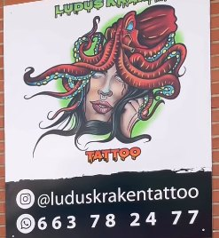

Un espacio privado
Nuestro estudio de tatuajes en el centro de Estepona, a pocos minutos de Marbella, San Pedro, Manilva y Casares. Cita previa, una persona por cabina y protocolo sanitario estricto. Aquí te contamos cómo trabajamos y cómo cuidar tu tatuaje.


Un espacio privado para tu pieza
Trabajamos con cita previa en la calle Miguel de María Luque, en Estepona. Una sola persona por cabina, música baja y el tiempo que tu tatuaje necesite. Antes de empezar repasamos el diseño contigo hasta que sea exactamente lo que quieres.
Material de un solo uso
Agujas, cartuchos, tintas y protecciones se abren delante de ti y se desechan al terminar.
Esterilización y limpieza
Superficies desinfectadas entre clientes y material reutilizable esterilizado según la normativa sanitaria vigente.
Atención personal
Diseño a medida, consejo sobre zona y tamaño, y guía de cuidados para que la cicatrización sea perfecta.
Tu tatuaje, día a día
La curación completa lleva unas cuatro semanas. Te damos esta guía por escrito al terminar la sesión.
Protección
- Deja el film o apósito el tiempo que te indiquemos.
- Lava con agua tibia y jabón neutro, sin frotar.
Hidratación
- Seca a toques con papel limpio.
- Crema reparadora en capa fina, dos o tres veces al día.
Pelado
- Puede picar y pelarse: no rasques.
- Nada de sol, piscina, mar ni sauna.
Curado
- La piel se asienta y el color se fija.
- Usa protector solar alto para que dure.
Antes de tu cita
Si tu duda no está aquí, llámanos o escríbenos al 663 78 24 77 y te respondemos.
¿Cuánto cuesta un tatuaje?
Depende del tamaño, la zona y el detalle. Te damos presupuesto cerrado con tu idea. Para piezas grandes tenemos ahora la sesión de unas cuatro horas por 280 €.
¿Necesito cita previa?
Sí. Trabajamos con cita para dedicarte el tiempo que tu pieza necesita. Pídela por WhatsApp o con el formulario de esta página.
¿Puedo traer mi propio diseño?
Claro. Lo revisamos contigo y lo adaptamos a la zona del cuerpo para que envejezca bien en la piel.
¿Hacéis tapados y retoques?
Sí. Mándanos una foto del tatuaje que quieres cubrir o renovar y te decimos qué opciones hay y cuántas sesiones hacen falta.
¿Duele mucho?
Depende de la zona y de cada persona. Las costillas, los pies o el interior del brazo suelen molestar más. Hacemos pausas siempre que lo necesites.
¿Cómo me preparo para la sesión?
Duerme bien, come antes de venir y evita el alcohol el día anterior. Trae ropa cómoda que deje libre la zona.
¿Y si soy menor de edad?
Es imprescindible la autorización firmada de tu padre, madre o tutor legal. Consúltanos antes de pedir cita.
¿Tienes una idea en mente?
Cuéntanosla por WhatsApp y te respondemos con presupuesto y fechas.